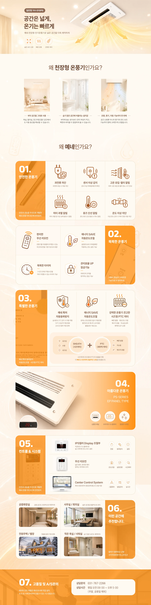
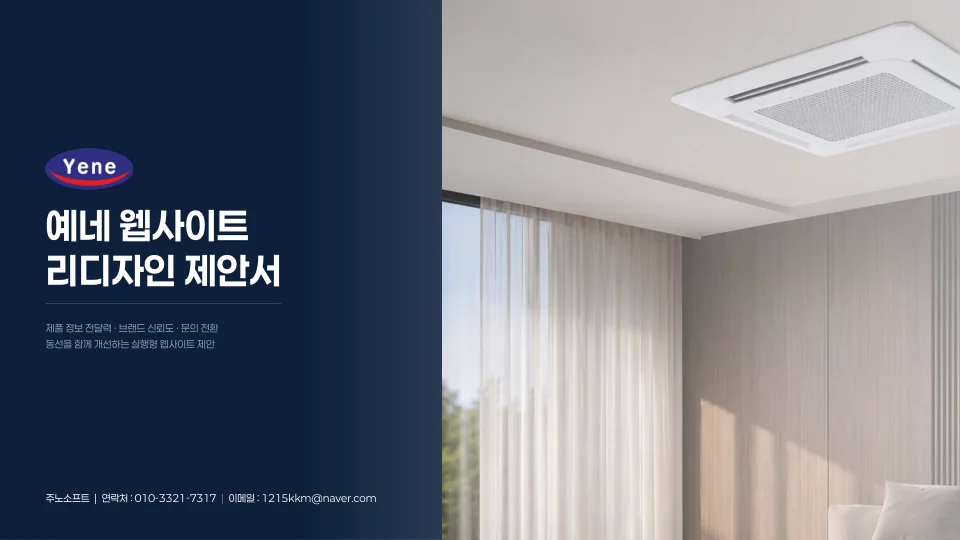
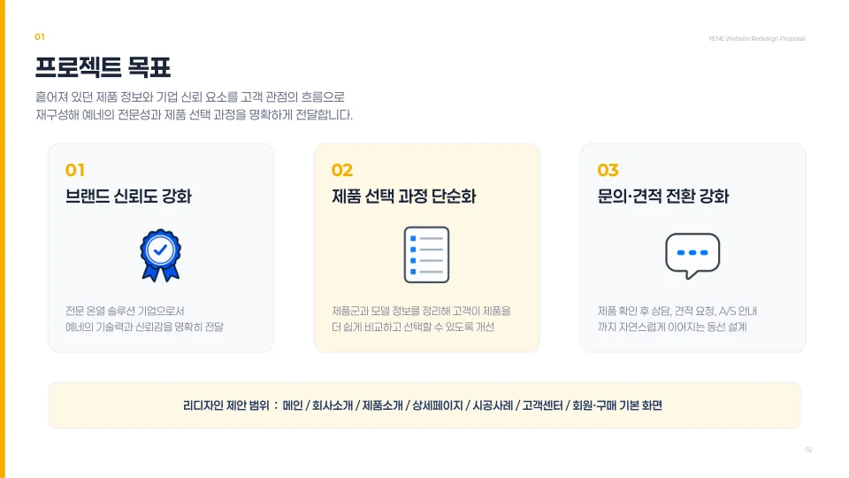
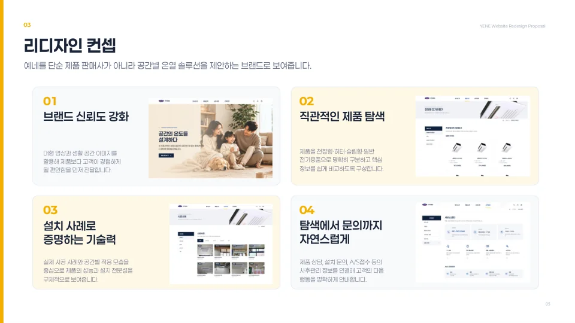
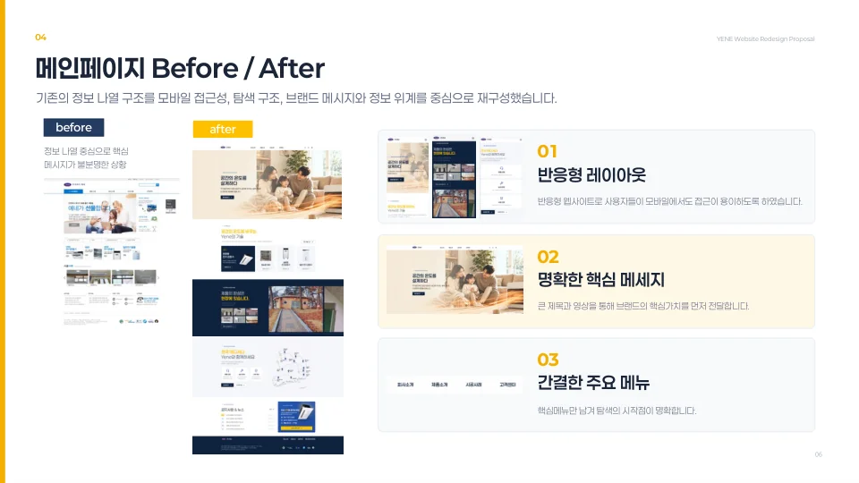
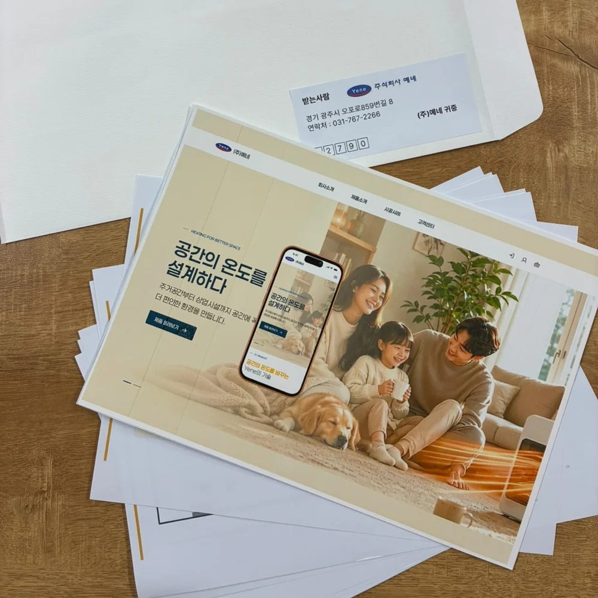
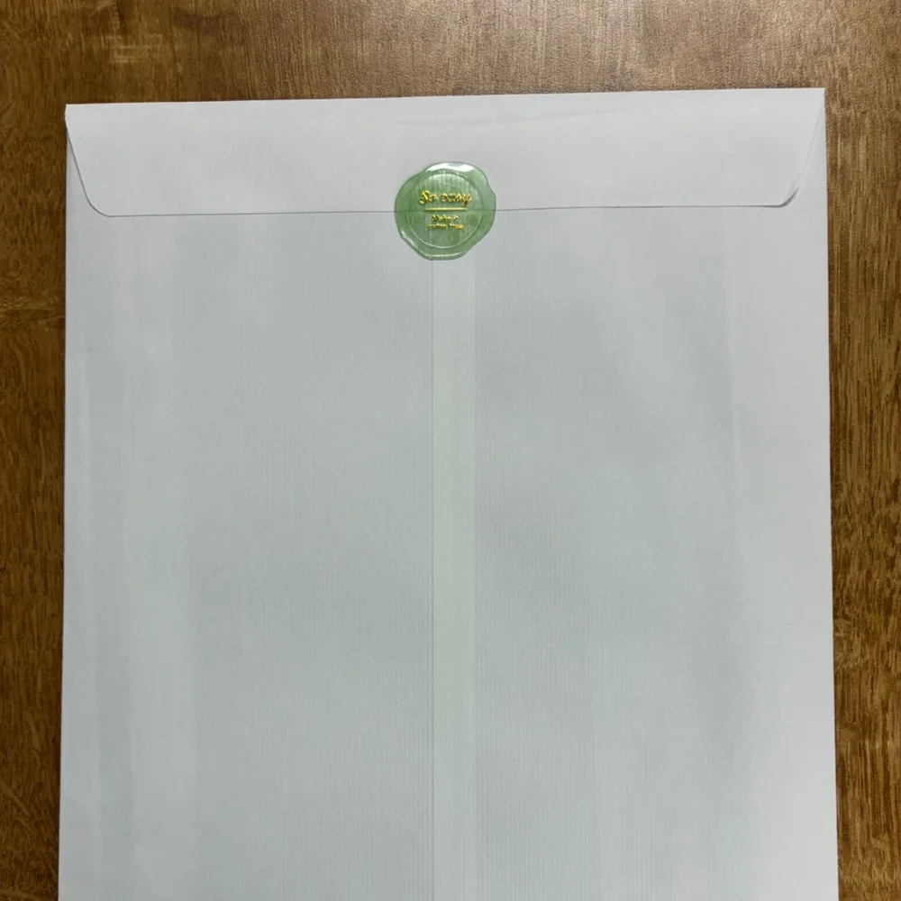
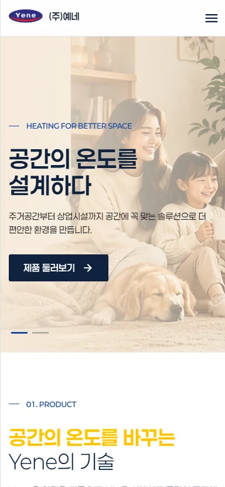

01Overview
제품은 좋은데, 그게 잘 안 보이던 사이트
(주)예네는 천장형 전기온풍기 등 온열·환기 제품을 만드는 B2B 기업입니다. 기존 사이트는 제품·기업 정보를 충분히 갖췄지만, 고객이 제품을 이해하고 문의까지 이동하는 흐름이 명확하지 않았습니다.
이를 모바일 접근성 · 탐색 구조 · 브랜드 메시지 · 정보 위계를 중심으로 재설계해, 예네의 전문성과 제품 선택 과정을 명확하게 전달했습니다.
02Problem
기존 사이트 진단
- 모바일 접근성 부족화면 일부가 잘리고 가로 스크롤이 필요해 모바일에서 제품 탐색이 어려움.
- 브랜드 신뢰 전달 부족안전성·기술력보다 오래된 UI와 복잡한 메뉴가 먼저 인식됨.
- 복잡·중복된 탐색 구조상단·회원 메뉴 + 검색창 + ALL MENU + 우측 퀵까지 동시 노출되어 시작점이 불분명.
- 정보 우선순위·가독성 부족배너·제품 카테고리·게시판이 유사한 크기·강도로 배치되어 핵심을 빠르게 구분하기 어려움.
03Concept
단순 판매사가 아니라, 공간별 온열 솔루션 브랜드로
대형 영상과 생활 공간 이미지로 제품보다 고객이 경험하게 될 편안함을 먼저 전달.
천장형·히터·슬림형·일반 전기용품으로 명확히 구분하고 핵심 정보를 쉽게 비교.
실제 시공 사례와 공간별 적용 모습으로 제품의 성능과 설치 전문성을 구체적으로.
제품 상담·설치 문의·A/S 접수 등 사후 정보를 연결해 다음 행동을 명확히 안내.
04Design Guide
차가운 기술 제품을, 따뜻하게
기존 로고의 블루·레드 대신 네이비 + 앰버 + 크림의 웜 뉴트럴 팔레트로, 안전성·전문성은 신뢰감 있게, 사용 경험은 따뜻하게 느껴지도록 톤을 재정의했습니다.
단순 판매사가 아니라 공간별 온열 솔루션 브랜드로 보이도록, 신뢰·따뜻함·명확함을 기준 삼았습니다.
네이비를 기반으로 앰버를 포인트(섹션 번호·CTA)로, 크림·화이트를 배경으로 사용해 차분하면서도 따뜻한 무드를 구성했습니다.
굵은 고딕 제목으로 핵심 메시지를 강하게, 얇은 본문으로 제품 정보를 명확하게 — 메시지는 크게 · 정보는 읽기 쉽게 대비를 두었습니다.
큰 앰버 넘버링 카드(01–04), 라인 아이콘, 라이프스타일 이미지, 좌측 세로 컬러바 + 섹션 넘버 러닝 구조를 반복해 통일감을 유지했습니다.
05Before / After
메인페이지 재구성
기존의 정보 나열 구조를 모바일 접근성 · 탐색 구조 · 브랜드 메시지 · 정보 위계 중심으로 재구성했습니다.
- 반응형 레이아웃PC·모바일 어디서나 접근이 쉬운 반응형 구조로 재설계.
- 명확한 핵심 메시지큰 제목과 영상으로 "공간의 온도를 설계하다"라는 브랜드 가치를 먼저 전달.
- 간결한 주요 메뉴핵심 메뉴만 남겨 탐색의 시작점을 명확히.
06My Contribution
내가 맡은 상세페이지 · 제안서 · 초기 구현
팀 4인 프로젝트에서 나는 제품 상세페이지 제작, 리디자인 제안서 기획·제작, 그리고 초기 페이지 구현을 맡았습니다.
길게 나열되던 제품 설명을 ① 효과를 먼저 제시 → ② 기능을 그룹화해 신뢰근거 제공 → ③ 사용공간·선택 이유를 시각화하는 하나의 설득 흐름으로 재구성했습니다.

기존 사이트 진단부터 리디자인 목표·컨셉·Before/After·기대 효과까지, 리디자인의 근거를 담은 제안서를 직접 구성·제작했습니다.




여기서 그치지 않고, 완성한 제안서를 실제로 인쇄해 (주)예네 앞으로 발송했습니다.


디자인을 넘어 HTML·CSS·JavaScript로 초기 페이지를 직접 구현해, 반응형 UI가 실제로 동작하는 사이트로 이어지도록 했습니다.
07Build
제안에서 멈추지 않고, 동작하는 페이지로
리디자인을 시안으로만 두지 않고, HTML·CSS·JavaScript로 초기 페이지를 직접 구현해 PC·태블릿·모바일에서 실제로 동작하는 반응형 사이트로 이어지도록 했습니다.
반응형 초기 구현
HTML·CSS·JavaScript로 PC·태블릿·모바일에 대응하는 반응형 레이아웃을 직접 구현했습니다.
상세페이지 설득 흐름
효과 → 기능 → 사용 공간으로 이어지는 3단 설득 구조를 실제 페이지로 구성했습니다.
제안서 → 구현 연결
진단·컨셉·Before/After를 담은 제안서를 직접 만들고, 그 방향을 화면으로 옮겨 디자인과 개발을 연결했습니다.
배포
GitHub · Vercel로 배포해 실제 URL에서 확인 가능한 결과물로 완성했습니다.
08Challenges
상세페이지를 다시 설계하며
PROBLEM긴 이미지와 안내문이 맥락 없이 이어져 설득력이 약했다.
해결 → 상세페이지를 ① 효과를 먼저 제시 → ② 기능을 그룹화해 신뢰근거 제공 → ③ 사용 공간·선택 이유를 시각화하는 하나의 설득 흐름으로 재구성했습니다.
PROBLEM제품 기능이 많아 신뢰 근거가 흩어져 보였다.
해결 → 기능을 번호·아이콘 체계로 그룹화해, 무엇을 보장하는 제품인지 빠르게 읽히도록 정리했습니다.
PROBLEM모바일에서 화면이 잘려 제품 탐색이 어려웠다.
해결 → 상세를 포함한 주요 화면을 반응형으로 다시 구현해 모바일에서도 끊김 없이 탐색·문의로 이어지도록 했습니다.
PROBLEM"왜 예네인가"라는 선택 이유가 약했다.
해결 → 거실·욕실 등 실제 사용 공간과 선택 이유를 시각화하고, 실제 시공 사례로 설치 전문성과 성능을 증명했습니다.
09Results
재설계된 예네

—Review
배운 점
실제 기업 사이트를 진단하고 리디자인하며, 화면을 예쁘게 만드는 것을 넘어 정보가 문의로 이어지는 흐름을 설계했습니다. 제안서로 근거를 설득하고 직접 구현까지 해보며 디자인과 개발을 잇는 감각을 키웠습니다.
아쉬운 점
회원·주문·관리자 등 서버 기능 연동까지는 이어가지 못했고, 리디자인의 개선 효과를 실제 지표로 검증하지 못한 점이 아쉽습니다.
개선 방향
시공사례·상담 데이터를 실제로 연동하고, 문의 전환 같은 지표를 측정해 "보기 좋은 화면"을 넘어 성과로 증명되는 사이트로 발전시키고 싶습니다.
실제 기업 사이트를 진단하고 리디자인하며, 화면을 예쁘게 만드는 것을 넘어 정보가 문의로 이어지는 흐름을 설계하는 경험을 했습니다. 제안서로 근거를 설득하고, 직접 구현까지 해보며 디자인과 개발을 잇는 감각을 키웠습니다.